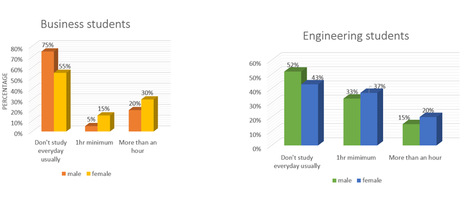
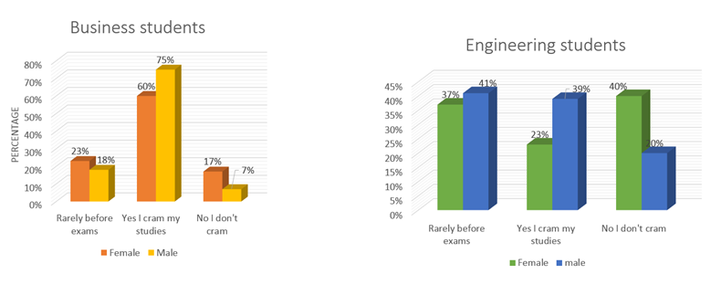
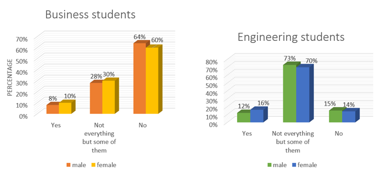
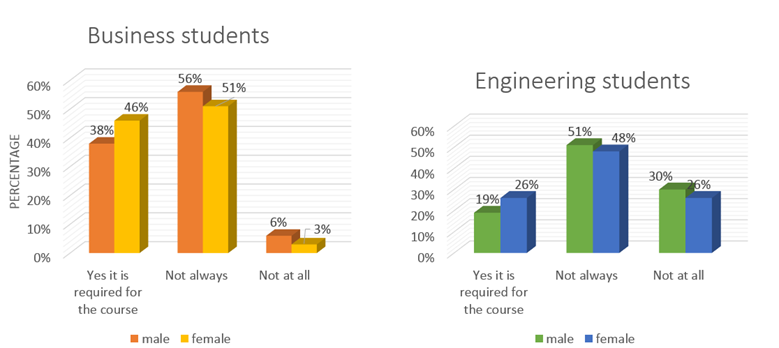
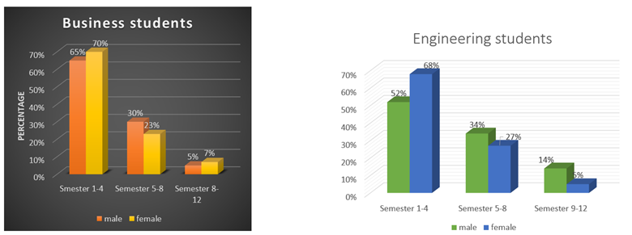

Tendency
of cramming studies in university students
Author: Abir Mahmud
Date: 02 Aug 2014
ACKNOWLEDGEMENT
A great many
people have contributed to this research and I feel very blessed that I received the guidance
and assistance of many helpful people on the way of completing this Research
Paper. First of all I would like to thank the almighty for giving me the
patience, energy, comprehension and courage to finish this huge task within its
deadline.
I am
especially grateful to my faculty Ms.
Michelle Draper, for her constant effort in giving valuable knowledge
and expertise in enabling me to work on such a professional research and
improving my writing skill.
I would also like to thank my friends, especially Avik, Alex and
Muntasir, for helping me to conduct the survey and also for their honest
opinions regarding my topic and the questionnaire.
I would
like to thank all the students who took part in the primary survey and filled
out the questionnaires, that was the basis of my primary data. I also thank my
parents for providing me endless support and motivation in completing this
research paper.
Abstract
The research topic for this paper is called “The tendency of
cramming studies among university students”. This paper has been prepared as a
part of English 105 course under the
supervision of Ms. Michelle Draper for the summer semester of 2014. This paper
analyses the tendency of cramming studies among university students .In this
paper I tried to find out why students cram their studies at the last moment
just before their exam and I also tried to find out which gender, age group and
students from which background are more likely to cram their studies. My paper
has been divided into several parts for the clear understanding of the topic.
The first part is introduction, which is then followed by background, areas of
research, hypothesis (which is partially proven) and research methodology. All
of this basically gives the main idea of the topic, along with the explanation
how I have gone about my research. It focuses mostly on why students cram there
studies. The primary and secondary data together with their analysis deals with
the presentation of the knowledge and information I have gathered as I went
through with this research. It tries to review and relate the findings
with my hypothesis.
Questions such as how information get stored
in a student’s brain and how cramming studies effects a student’s life in the
long run is answered in the second section. The limitations section explains in
detail about the short-comings I have experienced. Finally, a conclusion was
made to the entire research. Attached at the very end is the appendix section.
This includes all the handwritten materials, rough drafts and other materials
which were used in the completion of the research paper.
Table of contents
|
Title |
Page Number |
|
1.Introduction |
1 |
|
2.Bacground |
2 |
|
3.Area of
research |
4 |
|
4.Hypothesis |
5 |
|
5.Methodology |
6 |
|
6.Primaty
Data Presentation and Analysis |
7 |
|
7.Secondary data
presentation and Analysis |
15 |
|
8.Limitation |
18 |
|
9.Conclutino |
19 |
|
10.Reference |
20 |
|
11.Appendix |
21 |
Introduction:
“Cramming” the title may
sound confusing at first because the dictionary meaning of cramming is to put a
lot of things in a very small space. Some may ask that what it has to do with
studding. Well it’s the thing most of the students do before all the exam. That
is to absorb a lot of info in a very short time.
In education cramming (also
known as mugging or swotting) meaning "to study with
determination" is the practice of working intensively to absorb large
volumes of informational material in short amounts of time. It is often done by
students in preparation for upcoming exams, especially at the last minute.
Cramming is often discouraged by educators because the hurried coverage of
material tends to result in poor long-term retention of material. This practice
is done by most of the students worldwide. Only a hand full of students can say
that they haven’t done it ever. Generally considered as a negative study
technique, cramming is becoming more and more common among students both at the
secondary and post-secondary level worldwide. Pressure to perform well in the
classroom and engage in extracurricular activities in addition to other
responsibilities often results in the cramming method of studying
In Bangladesh to enroll in a university is very tough because there are
many students but very few seats in the universities so students have to study
very hard to enroll in the University of their Choice. But after getting in the
university almost all the students somehow become a bit lazy and start to pile
up studies. In my research I have tried to know why the students pile up
studies and then start cramming before the exam and I also had tried to know
what happens
to the lessons which learn in the cramming station after the exam. Can the students remember what they have
learned? And if so then how much they can recall and does gender has a role to
play in this matter. I will request the
readers to stick until the end to find answers to all these questions.
Background:
Being a student myself I
understand the concept of cramming quite well and it’s my firm belief is that
every student in the world at some point of their life applied cramming as
their study tactic. There was a time when I used to be a very regular young
student and I didn’t cram my studies but when I enrolled in university, for
some mysterious reason I become a little bit lazy and then the situation
demanded of me to do a little bit of cramming before my exams. Looking back
when I didn’t cram my studies I can surely say that cramming is a bad way to
study.
In the old days cramming
studies wasn’t a concept that is well understood because in that time people
used to study to learn, not to pass an exam. But in the start of the 20 century
an educated work force was on high demand. Everywhere people needed educated
people to run business, office, instruments and factories. At that time many
people started to go to university not to learn but to earn a certificate and
because of that materialism entered in the vein of evocation and transformed
the education sector in a commercial sector.
Teaching students to avoid last-minute cramming is a large area of
concern for education professionals and profit for educational corporations and
businesses. Learning and teaching study techniques that enhance retention as
opposed to learning for a single examination is one of the core issues that
plagues colleges and university academic advisors, and also adds to the stress
of academic success for students. Ideally, proper study skills need to be
introduced and practiced as early as possible in order for students to
effectively learn positive study mechanisms.
According to W.G. Sommer, students in a university system often adapt to
the time-constraints that are placed upon them in college, and often use
cramming to perform well on tests. In his article, Procrastination and Cramming: How
Adept Students Ace the System, he states “Many students outwardly adapt to
this system, however, engage in an intense and private ritual that comprises
five aspects: calculated procrastination, preparatory anxiety, climactic
cramming, nick-of-time deadline-making, and a secret, if often uncelebrated,
victory.
Though it is possible to be victorious in some of the battle of exam but
the war of being a properly educated person is los if someone cram their
studies before every exam because by cramming their studies students cant link
up new information with new one and the information learned lasts only a very
short time and it’s possible to even forget some information in exam hall also.
So cramming for a test is a very bad idea.
Area
of the research:
# The reason why students
cram their studies
# The age group of
students who are most likely to cram
# The role that gender
has to play in cramming studies.
# students of which
department cram most.
# Relation between
cramming and study premature
# Short term effects of
cramming
# Long term effects of
cramming
# Effects of cramming in
the professional life.
Hypothesis
Tough many students do it
and many people say that cramming studies before exam is safe, I expect to find
that students who cram studies don’t learn anything properly and they are more
likely to forget their lessons within a very short time. I think being in
constant pressure reduces the chance of cramming and because of that students
from engendering department are more likely not to cram studies. It’s expected
that male students are more likely to cram studies then female students. I also
think that student who just enrolled in the university are more likely to cram
studies then the students who are at the end of their university life.
Research
methodology
For my primary research, I will conduct a
survey of representative of the students of Dhaka. My survey was mostly of NSU
students and my survey size was of 40 people. I tied to survey equal number of
male and female students and interviewed students who have the habit of
cramming studies regularly to find out what have they actually learned by
cramming their studies regularly. For that I designed questionnaire with
different types of questions so as to get a range of useful data which will
help me to answer mu research question.
For my secondary research I used the resource
of the library and also consult few books and autobiography’s of students who
used to do cram their studies ,etc. I will also browsed the internet and used
standard search engine like Google to find valuable documents which are related
to my topic.
Primary
data presentation and n analysis:
In this part of the
research paper I would try to present the data that I have found in my survey
and try to analysis the found data
Study
done by students per day:

First of all I had tried
to find out how much time students spend per day for studying because only by
judging students regularity one can say that if a student cram or not. That’s
why this was my first question in the survey. According to the data which came
from the survey the students of the business department don’t study as
regularly as the entering students. From the business department 75%of male and
55% of the female students did that they don’t study regularly, 5%of male and
15% of female students said that they study regularly at least one hour per day
and 20%of male and 30 % of female students said that they study more than one
hour every day.
In the case of engineering
students 52% of male and 43% of female students said that they don’t study every
day , 33% of male and 37% of female students said that they study regularly at
least one hour per day and 15%of male and 20 % of female students said that
they study more than one hour everyday
What this data tells us
is that comparing the two departments, both male and female students of the
business department don’t study regularly as the students of the engineering
department the number of students who don’t study regularly are also lower in
the entering department. The number of students who study at least 1 hrs. Regularly
are also higher in the engineering department. So we can say that students of
the engineering department are much more serious about their study then the
students of the BBA department.
From the two charts we
can also see another trend. In both the department the female students tend to
study more regularly then the male students. There are several reasons for this
trend. First of male students attend in a lot of extracurricular activities
then the female students. Which drains out a lot of time from their study time.
Secondly male students also like to socialize a little bit more than the female
students and also like to attend in a lot of sporting activities this is why
male students of both department study a little bit less than the female
students.
Admits
to cram studies.

This chart is about
students who admits to cram their studies. In this chart we can see that from
the business department 18%of male and 18% of the female students said that
they really cram their studies. 75%of male and 60% of female students said that
they cram regularly before exam and 7%of male and 17 % of female students said
that they study more than one hour every day.
In the case of
engineering students 41% of male and 37% of female students said that they cram
their studies rarely before exam , 23% of male and 39% of female students said
that they cram regularly and 20%of male and 40 % of female students said that they
don’t cram at all.
To make sense of the
cramming tendency of students were asked that if they cram before exam and the
answers so relate with the first question about their study habits. The
students who said that they study regularly said that they don’t cram their
studies regularly and the students who said that they don’t study regularly
tend to cram their studies before examination.
Same trend as before can
be seen in this chart also. The students of engineering department studies mush
more seriously than the students of the business department. Two things are at
play hear .firstly most of the students of the engineering department are very passionate
about their subject so they study very hard and secondly students of engineering
department are always in constant presser so they have study hard or to flunk
the test.
Recalling
the crammed information

This chart is all about
recalling and remembering the crammed up information. I have asked the students
who cram regularly that if they can recall information after exam and if yes
then how much info can be remembered and they answered the following, students
from the business department 8%of male and 10% of the female students said that
they can recall information after the exam. 28%of male and 30% of female
students said that they partially recall information after exam and 64%of male
and 60 % of female students said that they can’t recall any information after
exam.
In the case of
engineering students 12%of male and 16% of the female students said that they
can recall information after the exam. 73%of male and 70% of female students
said that they partially recall information after exam and 15%of male and 14 %
of female students said that they can’t recall any information after exam.
So we can say that
students who cram studies can’t remember what they have learned after
examination. The reason for this is that when Cramming for a test can lead to
inability to connect new facts to prior learning, which is necessary to input
ideas into memory. Cramming does not allow time for the brain to process the
information and make critical connections in concepts.
Is it
necessary to cram to survive a course:

Students were asked that
if cramming is needed for serving a Couse and students of the business
department, 38%of male and 46% of the female students said that yes It is required.
56%of male and 51% of female students said that not always and 6%of male and 3
% of female students said that not at all.
As for the engineering
students 19%of male and 26% of the female students said that yes it is required.
51%of male and 48% of female students said that not always and 30%of male and
26 % of female students said that not at all.
Though most of them agree
that it is not needed to cram their studies but they do it anyway because of
laziness procrastination,
preparatory anxiety, climactic cramming, nick-of-time deadline-making, and a
secret, if often uncelebrated, victory.
Semester’s
role in cramming:

The above data is about
students who cram their studies and they are in which semester. For this both
the engineering and the business students show same kind of trend. Students at
the beginning of their university life who are in semester 1-4 are most likely
to cram then the students of the semester 5-8 and semester 9-12. This happens
because when students go to the end of their university life they tend to get
more serious about their study and reduces tendency of cramming.
Secondary
data presentation and analysis:
As I mentioned before in
the introduction part cramming studies leads to a life without proper knowledge
and education. It’s also a way to forget information easily just after the
exam. Most of the secondary sources agrees with my hypothesis. I have grouped
all the secondary sources in three category which are books newspaper and
online sources.
Books:
Mahmud,
J.(2009).Education Psychology , New Deli, DL : APH Publishing
In this book the author
discusses about how to use psychological methods to improve the way we study. The book concentrates on core concepts
and principles and gives readers an in-depth understanding of the central ideas
of educational psychology–helping them better understand study process.in this
book the author also mentions some study habit which has bad psychological
effect on human and cramming is one of these bad study habit. He also mentions
that cramming is like spoon feeding and it doesn’t improve creativity. This is
totally related to my hypothesis.
Jacobs,L.F., & Hyman,J.S.(2013).The Secret
of College Success.Hoboken,NJ: John Wiley & Sons.
This book is all about
how to be good in college or university. In this book the authors discusses and
gives various information about how to pic courses, how to choose a major, how
to use time etc. The authors also mentions what not to do when studying and
cramming is one of those things. According to the author when people cram they
use their short term memory and that’s why they forget what they have learned
very quickly .so this method of learning must be avoided.
Newspaper:
Hearney,
A.(2013,January 24).Bad Education. The
New York times, P.D9
This article is about the
day by day decreasing condition of Japan’s education. The author blamed the
tendency of cramming studies in Japanese students for this condition. In this
article the author talks about how once japan was in the pinnacle off education but in recent years it lost that position because of the
tendency of cramming studies in students. Cramming before exam is preparing the
Japanese students to answer the questions which answer already exists rather
then preparing them to innovating new things .
Online
sources:
Wheeler,M.(2012,August). Cramming for a test? Don't do it, say
UCLA researchers .UCLA News room, doi:
237733#
This is an online article
published in the online journal of University of California called UCLA News
Room. This article is about a research done in University of California about
cramming before exam. In this article mentions that most students in some part
of their university life has crammed before exam but they recommend us not to
do it because it harms to brain cells. So if any
student sacrifices sleep time in order to study more than usual, he or she is
likely to have more academic problems, not less, on the following day.
Conclusion
:
Tough most of the
secondary sources agree with mu hypothesis and my primary data also supports my
hypothesis, I cannot say that my hypothesis was fully proven because I couldn’t
survey other universities in Dhaka and out of Dhaka to know the perspective of
Bangladesh.so I should say that my hypothesis is partially proven correct. I am
very hopeful that if the survey is done all over the Bangladesh then dame kind
of result woud be fond and that will prove my hypothesis fully correct.
Reference:
1.Gorst, H.E. The Curse
of Education. London: Grant Richards, 1901. (Page 5).
2.How to Take on College
Studying: Your Cramming Days are Over. College Board. Retrieved on 15 May 2009
3. How to Cram (Even
Though You Shouldn’t). Cockrell School of
Engineering at The University of Texas at
Austin. Retrieved on 15 May 2009. Is also used to say that someone has
hurt themselves (Synonym)
4. Summer, W.G. "Procrastination and cramming: how adept students
ace the system." Journal
of American College Health. 39(1).
1990. 5-10.
5. Napompech,
Kulkanya (2011), "What Factors Influence High School Students in Choosing
Cram School in Thailand", 2011 International Conference on Business and Economics Research (IACSIT Press,
Singapore: IPEDR) 16: 90–95, doi:10.7763/IPEDR, ISSN 2010-4626
Appendix:
Research proposal:
Tendency of cramming studies in university students
Date: June 18, 2014
To: Ms. Michelle Draper
From: Abir Mahmud, Id#**********,
Eng 105, sec 15.
Subject: proposal to do a
research on the tendency of cramming studies in university students.
Introduction
In education cramming (also
known as mugging or swotting) meaning "to study with
determination") is the practice of working intensively to absorb large
volumes of informational material in short amounts of time. It is often done by
students in preparation for upcoming exams, especially at the last minute.
Cramming is often discouraged by educators because the hurried coverage of
material tends to result in poor long-term retention of material. This practice
is done by most of the students worldwide. The focus of my research will be on
why students have the tendency for cramming studies and what effect it had on
them.
In Bangladesh to enroll in a university is very tough because there are
many students but very few seats in the universities so students have to study
very hard to enroll in the University of their Choice. But after getting in the
university almost all the students somehow become a bit lazy and start to pile
up studies. In my research I would try to know why the students pile up studies
and then start cramming before the exam and I would also try to know what
happens after the exam. I wonder if male or female students are more likely to
cram studies before exam. I hope to find answers to such questions through my
research work.
Research
questions
1. What does cramming
means?
2. Why students cram?
3. Which age group of
students are more likely to cram studies?
4. Which gender of
students are more likely to cram studies?
5. Which department are
more likely to cram studies?
6. How to prevent
cramming?
Hypothesis
Tough many students do it
and many people say that cramming studies before exam is safe, I expect to find
that students who cram studies don’t learn anything properly and they are more
likely to forget their lessons within a very short time. I think being in
constant pressure reduces the chance of cramming and because of that students
from engendering department are more likely not to cram studies. It’s expected
that male students are more likely to cram studies then female students. I also
think that student who just enrolled in the university are more likely to cram
studies then the students who are at the end of their university life.
Research
methodology
For my primary research, I will conduct a
survey of representative of the students of Dhaka and interview students who
have the habit of cramming studies regularly to find out what have they
actually learned by cramming their studies regularly. To that I will design q
questionnaire with different types of questions so as to get a range of useful
data which will help me to answer mu research question.
For my secondary research I plan to use the
resource of the library and will also consult few books and autobiography’s of
students who used to do cram their studies ,etc. I will also browse the
internet and use standard search engine like Google.
EX-
http://en.wikipedia.org/wiki/Cramming_(education)
http://newsroom.ucla.edu/releases/cramming-for-a-test-don-t-do-it-237733
http://web.stanford.edu/~eryilmaz/cramming_is_ineffective.html
http://tdlc.ucsd.edu/educators/educators_ask_the_scientist_kang.html
http://blog.4tests.com/why-cramming-is-bad-for-your-studies/
http://www.popsci.com/scitech/article/2008-11/cramming-not-long-term-study-strategy
http://learningdisabilities.about.com/od/instructionalmaterials/qt/cramming.htm
Orgsinazation
My paper will be divided
into several sections, the most important of which are the introduction,
background, data presentation and analysis, and summery of findings. Within the
sections mu organization will be based on my research questions .
Time
Table :
I hope to complete my
research by the end of June, and my secondary research by mid-July. I shall
complete writing the final draft of my research paper buy early August, and
submit it by specified deadline towards the end of this semester.
Request
for approval
I hereby request your approval for my research
proposal. If you wish me to modify or improve my proposal, I will submit it
after incorporating the necessary changes. I would also be gratefully for your
advice and help in conducting my research and completing the project.
Dear Respondent:
I am a student of CSE.I
am doing a survey on the tendency of cramming studies in university students ,
for the partial fulfillment of ENG 105 course.it Will take only a few minutes
of your time . Your response would be of great help in accomplishing the study.
However this information is only for academic purpose and will not be disclosed
elsewhere. I heartily thank you for your cooperation.
Research
topic: Tendency of cramming studies in university students
Male/Female Age: ,
Department: ,
Batch: (first 3 digits of your ID).
1.How many hours do you
study in average every day during the semester?
A) Don't study everyday
usually C) More than an
hour
B) 1hr minimum
2. How many days before
exam do you sit for studying intensely?
A) The night before C) 3 days before
B) 2 days before D)A week
before
3. Do you cram before
exams?
A)Rarely before
exams C)No I don't cram
B)Yes I cram my studies
4. Do you believe you can
remember things that you learn after the exam, if you cram?
A) No
C) Not everything but some of them
B) Yes
5. Do you believe
cramming is a good way to survive a semester?
A) Yes definitely
B) No not a good way
6. Does cramming help you
remember better than understanding the concepts?
A) Yes definitely
B) No
7. Do you believe every
straight 'A' students are crammer?
A) Yes they are C) Not
all of them
B) No they are not
8. Does your courses
require you to cram for exams?
A) Yes it is required for
the course. C) Not always
B) Not at all
9. Do you think if you
studied properly from the beginning of the semester, you would still need to
cram?
A) Yes
B) No C) May be
10. Do you participate in
any extracurricular
activities?
A) Yes B)
No
11. Do you face any physical problems after a
cramming session?
A) Yes B)
No
If yes then please
specify .
12. Please specify the
average number of courses you take per semester.
A) 2 B) 3 C) 4 D) 5
Name: Abir Mahmud
ID: ***********
ENG 105
SEC: 15
Assignment: Research outline: Tendency of cramming studies
in university students .
Thesis statement:
Tough many students do it
and many people say that cramming studies before exam is safe but it’s not and
by cramming studies before exam many students are dooming their future and
their career. By cramming before exam students don’t learn anything properly
and they are more likely to forget their lessons within a very short time.
Being in constant pleasure may reduce the chance of cramming and because of
that students who studies a very demanding subject are more likely not to cram
their studies before exam. Cramming is more common in male students then the
female students. Student who just enrolled in the university are more likely to
cram studies then the students who are at the end of their university life.
Though it’s the easy way out from the exams but students shouldn’t follow this
method.
A. Cramming means to work intensively to absorb
large volumes of informational material
in a very short amounts of time.
I.
Cramming is all about studding in the last
moment.
II.
It’s also known as mugging or swotting.
III.
Cramming can lead to a bad quality of
education.
B. Students
who cram do it because they have no choice.
I.
Student’s most of the time don’t do their work in time.
II.
Many students pile up their studies.
III.
Some student’s think that they have enough time and they will do it
later but in the end they
end up doing cramming all
their studies before exam.
C. By
preventing cramming any countries quality of education can be improved
dramatically .
I.
Cramming is the arch enemy of creativity.
II.
Student’s must be encouraged to not to keep their study pending.
III.
Student’s should be encouraged to be regular in their studies.